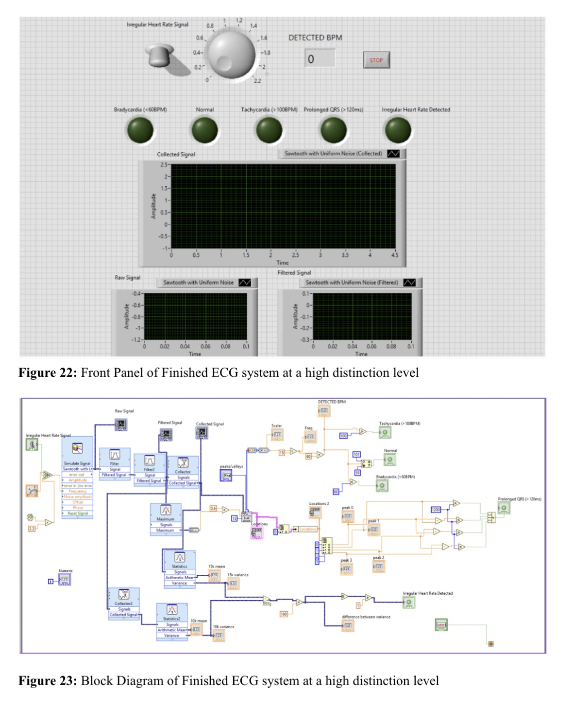

Aim / Goal
Develop practical experience across the full ECG workflow, from physical signal acquisition hardware to digital signal processing and user-interface design.
1 — ECG hardware & signal acquisition
In the hardware project, we constructed an ECG circuit on a breadboard and tested it using a patient simulator and laboratory instrumentation. This allowed controlled ECG-style waveforms to be acquired and observed on the oscilloscope while troubleshooting the physical circuit.
2 — LabVIEW ECG monitoring interface
In a second class, I developed the software side of ECG monitoring in LabVIEW. The system progressed through filtering, array-based signal collection, peak detection, BPM calculation and statistical analysis. The final interface included indicators for bradycardia, normal rhythm, tachycardia, prolonged QRS and irregular heart-rate detection.
